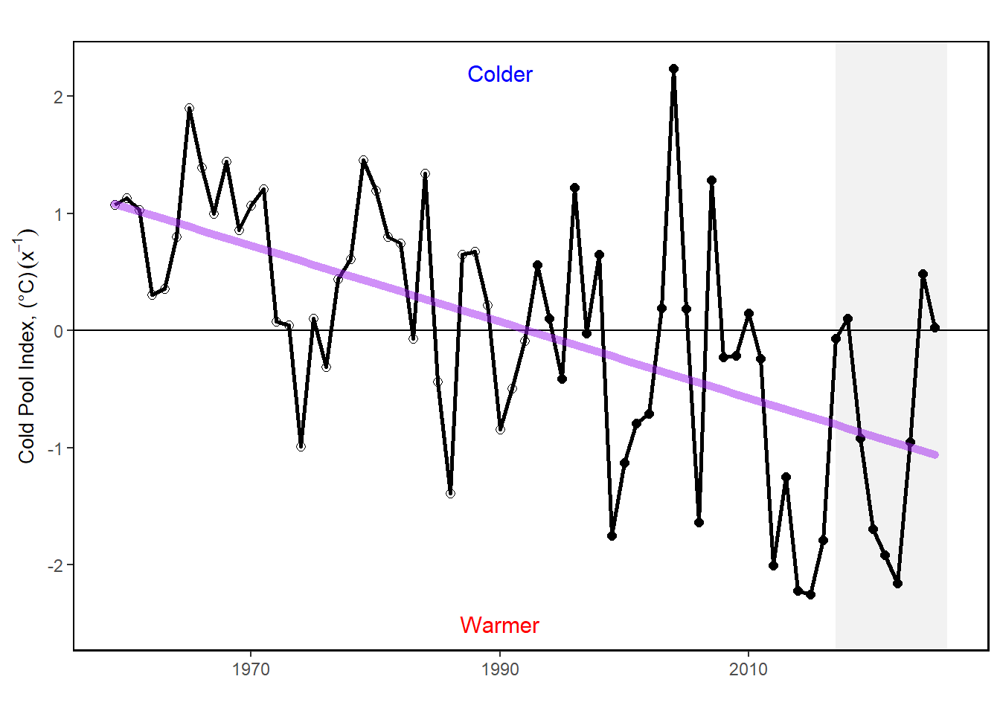
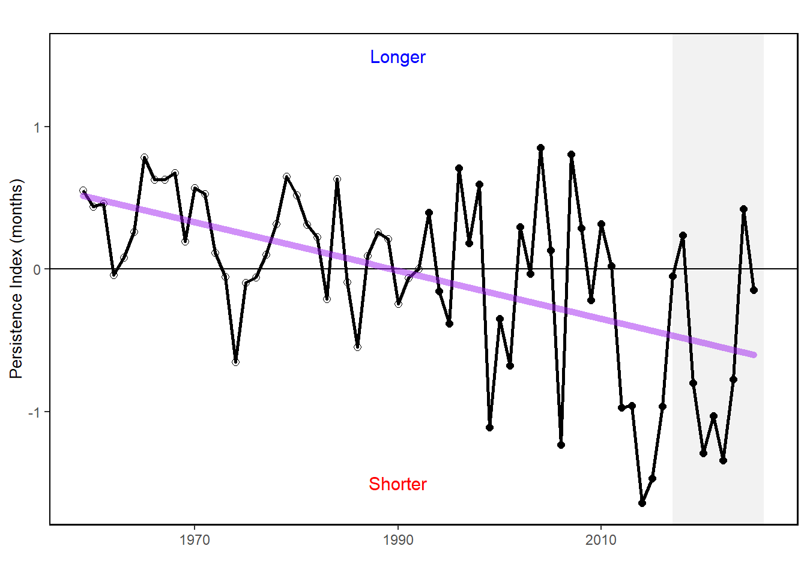
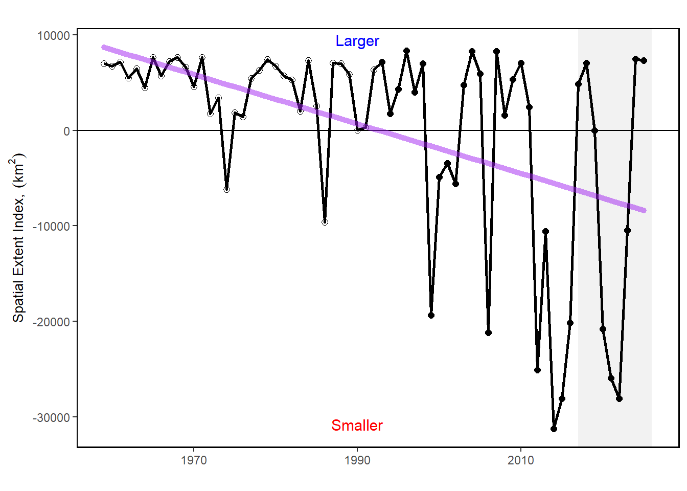

50 Cold Pool Index
Last updated July 23, 2026
Description: Three annual cold pool indices (and standard error) for 1959 through 2024
Contributor(s): Joe Caracappa, Vincent Saba, Zhuomin Chen
Affiliations: NEFSC
Indicator Family:
Indicator Category:
Synthesis Theme:
50.1 Introduction to Indicator
The cold pool is seasonal feature in the Mid-Atlantic Bight that is defined by it’s low temperature (< 10 deg C), relative freshness ( < 34 psu), and moderate depth (20 -200m). It is typically present between June and September. Cold pool dynamics can influence the recruitment and settlement of fish species. This indicator set shows the intensity, extent, and persistence of the cold pool each year based on gridded model and reanalysis products.
Changes in ocean temperature and circulation alter habitat features such as the seasonal cold pool, a 20–60 m thick band of cold, relatively uniform near-bottom water that persists from spring to fall over the mid and outer shelf of the MAB and southern flank of Georges Bank [67,68]. The cold pool plays an essential role in the structuring of the MAB ecosystem. It is a reservoir of nutrients that feeds phytoplankton productivity, is essential fish spawning and nursery habitat, and affects fish distribution and behavior [67,69]. The average temperature of the cold pool is getting warmer over time [63,70], and the area is getting smaller [71].
50.2 Key Results and Visualizations
Time series plots of the three cold pool indices. Cold pool index shows the mean temperature within the cold pool where positive values indicate a warming cold pool. Cold pool extent shows the change in maximum area relative to the historical mean, where negative values indicate a shrinking cold pool. Cold pool persistence measures the duration of the cold pool relative to the historical mean. Negative values indicate a shorter duration. In general the cold pool has been getting warmer, has persisted for a shorter duration, and has covered a smaller footprint since the 1960s.
Mid-Atlantic, cold_pool

Mid-Atlantic, persistence

Mid-Atlantic, extent

50.3 Implications
Changes in cold pool indicators can be signs of changes in regional/seasonal oceanographic patterns. This may impact the recruitment and behavior of species dependent on the cold pool.
Changes in the cold pool habitat can affect species distribution, recruitment, and migration timing for multiple federally managed species. Southern New England-Mid Atlantic yellowtail flounder recruitment and settlement are related to the strength of the cold pool [70]. The settlement of pre-recruits during the cold pool event represents a bottleneck in yellowtail life history, during which a local and temporary increase in bottom temperature negatively impacts the survival of the settlers. Including the effect of cold pool variations on yellowtail recruitment reduced retrospective patterns and improved the skill of short-term forecasts in a stock assessment model [63,70]. The cold pool also provides habitat for the ocean quahog [71,72]. Growth rates of ocean quahogs in the MAB (southern portion of their range) have increased over the last 200 years whereas little to no change has been documented in the northern portion of their range in southern New England, likely a response to a warming and shrinking cold pool [73].
50.5 Get the data
Point of contact: joseph.caracappa@noaa.gov
ecodata dataset: ecodata::cold_pool
Tech Doc link: https://noaa-edab.github.io/tech-doc/cold_pool.html